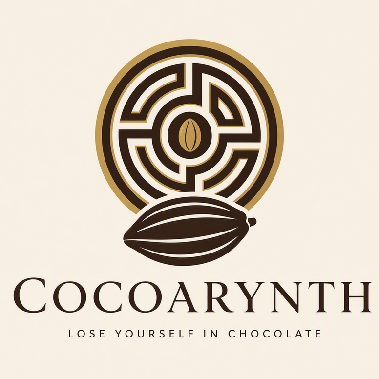
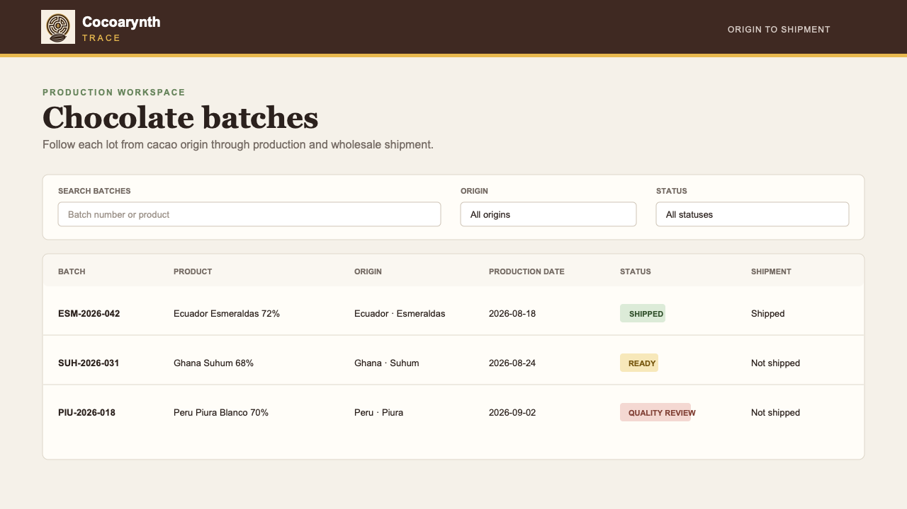
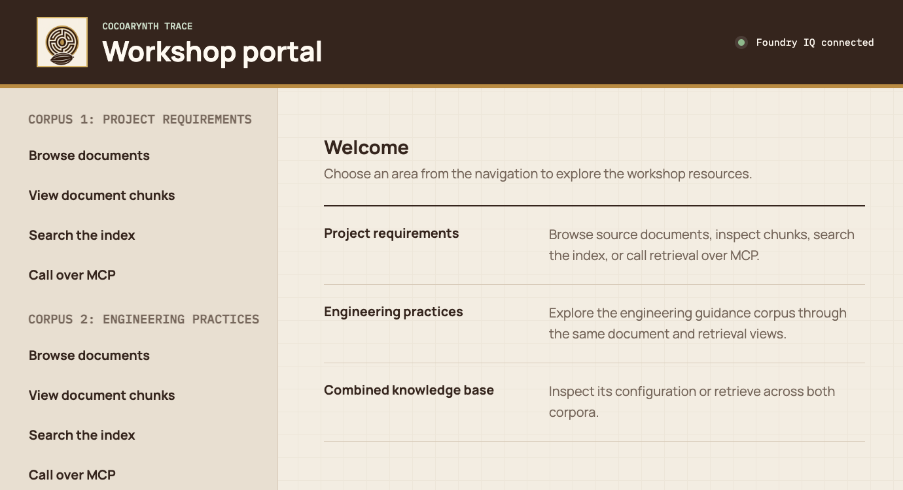

Building a developer knowledge base
for GitHub Copilot
About you
Turn to your neighbor and introduce yourself:
- Name
- Location
- What coding agents do you usually use?
- What's your favorite LLM to use with the agent? What's your LEAST favorite?
Imagine joining a new team. How do you get your questions answered? How do you make sure you're building the right thing the right way?
The answers to your engineering questions
may require many sources
Code
What behavior exists today?
Evidence: implementation, tests, configuration
GitHub activity
What changed, why, and what remains open?
Evidence: PRs, issues, discussions
Documents
What does the business require or prohibit?
Evidence: requirements, ADRs, policies
Today: Give GitHub Copilot access to each of these sources progressively and see answer quality improve as you equip it with more sources.
The company: Cocoarynth
A fictional bean-to-bar chocolate company built around transparent sourcing.
- Makes small-batch, single-origin chocolate
- Works directly with cacao producers
- Tracks every origin lot and production batch
- Connects finished products to wholesale deliveries

The project: Cocoarynth Trace
A web app that follows every batch from origin to shipment
- Lists production batches and their status
- Shows cacao origin and production history
- Associates batches with wholesale shipments
- Generates an Origin Passport

The feature: Origin Passport
A machine-readable document that lets a wholesale retailer connect a chocolate bar batch to its origin and production history.
Includes approved facts
Product, batch, origin, producer, harvest, certification, production, and shipment details.
Leaves out confidential data
Supplier pricing, personal contacts, internal quality notes, and employee comments.
GitHub Copilot: Choose your client
GitHub Copilot CLI
Work from a terminal in the local repository.
GitHub Copilot App
Work from a project session connected to the repository.
VS Code
Work in Agent mode with the repository open.
Use the same client for every exercise so you can compare across stages.
If you have time after using chosen client, you can experiment with the other two.
Exercise #1: Investigate the local repository
Using the implementation files and tests, explain what this project does, identify its main components, and describe how it exports an Origin Passport. Cite the files that support your answer.
Watch
Which files does Copilot inspect?
Review
What tool permissions does it request?
Verify
Which claims have direct code evidence?
Connect GitHub Copilot
to GitHub MCP server
Bring PRs, issues, and discussions into the context window.
MCP: Model Context Protocol
MCP is the open standard that tells agent runtimes how to discover and connect to the tools they can call.
MCP architecture
Here, GitHub Copilot is the host; GitHub MCP is a connected server.
Configure GitHub MCP in VS Code
1. Add .vscode/mcp.json
{
"servers": {
"github": {
"type": "http",
"url": "https://api.githubcopilot.com/mcp/readonly",
"headers": {
"X-MCP-Toolsets": "repos,issues,pull_requests,discussions"
}
}
}
}2. Start and verify
github server is running.Configure GitHub MCP in Copilot CLI
GitHub MCP is built in with read-only tools enabled by default.
1. Start a new session
Add the Discussions toolset:
copilot --add-github-mcp-toolset discussions2. Verify the server
From the active Copilot CLI session:
/mcp show github-mcp-serverConfirm tools are available for repositories, issues, pull requests, and discussions.
Configure GitHub MCP in the Copilot App
1. Add the server
github and select HTTP.2. Enter the connection details
URL
https://api.githubcopilot.com/mcp/readonlyHeader
X-MCP-Toolsets: repos,issues,pull_requests,discussionsAdd the server, authorize with the event account, then confirm the GitHub tools appear.
Exercise: investigate the feature history
Use GitHub MCP to investigate this repository. Why was the Origin Passport export built this way, and what related work remains open? Cite the relevant pull request, issue, and discussion.
original choice
remaining work
field policy
Connect GitHub Copilot to
a document knowledge base
The pilot: Mapayça Markets
Mapayça Markets is a grocery store that wants to sell Cocoarynth chocolate bars.
The pilot request
Cocoarynth will supply its Ecuador Esmeraldas 72% chocolate bar.
Each shipment needs an Origin Passport that Mapayça's inventory system can import without manual conversion.
The question: Can Cocoarynth Trace support the pilot today?
The missing context lives in documents
Mapayça pilot requirements
Defines the required CSV format, schema, dates, and acceptance criteria.
Architecture decision
Explains why an Origin Passport is an immutable snapshot.
Data-sharing policy
Separates shareable traceability facts from confidential data.
Support runbook
Guides validation, regeneration, and import troubleshooting.
Foundry IQ ingests documents into a search index
A cloud pipeline turns source files into searchable, citable chunks.
Blob Storage
Stores a retrievable copy of each source document.
Search indexer
Detects additions and updates, then runs the ingestion pipeline.
Content Understanding
Extracts text, tables, images, structure, and metadata.
Chunk + vectorize
Creates semantic chunks and computes embeddings.
Search index
Stores text, vectors, metadata, and source references together.
For this workshop, the ingestion pipeline has already run.
Content Understanding preserves more than plain text
Rich extraction
Reads text and OCR, preserves tables as structured HTML, and describes images and diagrams.
Semantic chunking
Splits on meaningful document boundaries instead of arbitrary character counts.
Grounding metadata
Keeps document identity, page location, and source references with every chunk.
Hybrid search improves relevance
Foundry IQ combines exact-term matching with semantic similarity, then reranks the fused results.
CSV, field names, and identifiers.Explore Foundry IQ in the workshop portal
You do not need an Azure account. Use the portal URL supplied by your instructor.
Browse documents
Open the source files in the project requirements corpus.
View document chunks
Inspect extracted passages and page metadata.
Search the index
Compare passages, sources, pages, and relevance.

The authoritative requirement
“The importer requires CSV and rejects JSON uploads.”
- Stable header row
- One batch per row
- ISO
YYYY-MM-DDdates - No pricing or personal contacts
Exercise 3 · continued
Connect Copilot to the documents KB
Keep GitHub MCP enabled. Add the documents-only KB as a second integration.
One native MCP endpoint exposes the documents KB
Connection
- Name:
cocoarynth-documents - Transport: authenticated HTTP
- Credential: shared Search query key
- Tool: knowledge-base retrieval
Credential hygiene
- Use the private distribution method
- Do not paste the key into chat
- Do not include the key in screenshots
Separate integrations: Copilot coordinates the calls
plans across tools
live engineering artifacts
organizational documents
The client sees two integrations and decides when to call each one.
Exercise #3: Assess pilot readiness
Can Cocoarynth support Mapayça Markets' traceability import today? Identify the blocker and related open work, then cite the pilot requirements and current implementation evidence.
1. Explore
Inspect documents, chunks, search, and retrieval in the portal.
2. Connect
Add the documents MCP server alongside GitHub MCP.
3. Investigate
Answer with requirements, implementation, and issue evidence.
Connect GitHub Copilot to
a multi-source knowledge base
Foundry IQ knowledge base
An agentic retrieval engine that can query across multiple sources.
cocoarynth-kb-all plans retrieval across both indexes and exposes the combined KB through one endpoint.
Exercise #4: Create a grounded PRD
Create a grounded PRD using evidence from direct GitHub MCP and cocoarynth-combined. Distinguish required behavior, current implementation, and recommendations, then cite the sources.
1. Prepare
Connect the combined KB, keep GitHub MCP, and start a fresh chat.
2. Create
Ask Copilot to create origin-passport-csv-prd.md.
3. Review
Check requirements, implementation facts, standards, and citations.
Next steps
Start with the question, then map the evidence
Connect separate MCP servers
Choose this when the client should coordinate distinct tools and identities.
Build a combined knowledge base
Choose this when you want reusable, centrally configured retrieval across sources.
The one thing to remember
Coding agents need context beyond code.
Code
What exists
GitHub
What changed
Documents
What the organization needs
Connect existing MCP servers for live systems. Build a knowledge base when documents need to become searchable, citable evidence.
Continue after the workshop
Take-home repository
🔗 github.com/pamelafox/developer-kb-for-github-copilot
Exercises, portal, ingestion code, client configuration, tests, and Azure infrastructure.
Optional extensions
- Compare retrieval configurations
- Draft a cited readiness brief
- Replace the corpus and rerun ingestion
The event environment is temporary. Use the repository to deploy the pattern into your own Azure environment.